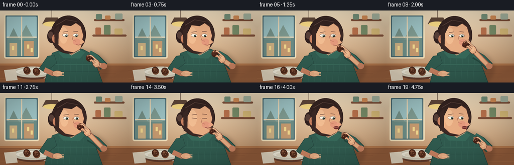
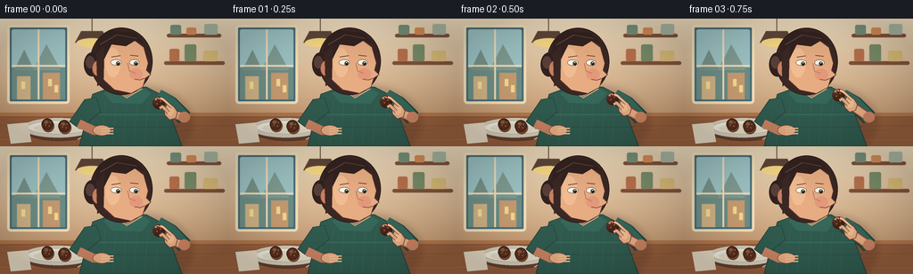

CODING AGENTS AS PIXEL WORLD MODELS
traex/GPT-5.6-Sol · motion_rationality_0024
点击播放 · 原生 RGB 像素
逐轮保存的候选
回放视频、检查图与代码变化。
每份候选均可单独播放。实际图片检查记录在下方工具轨迹中。
候选 01播放与检查图
点击播放 · 原生 RGB 像素


展开代码变化
--- 上一保存版本
+++ 本次保存版本
@@ -0,0 +1,307 @@
+from pathlib import Path
+import math
+import numpy as np
+from PIL import Image, ImageDraw, ImageFilter
+import artifact_io
+
+CASE_DIR = Path(__file__).resolve().parent
+W, H, N = 256, 144, 20
+S = 4
+SW, SH = W*S, H*S
+
+def sc(v):
+ if isinstance(v, (tuple, list)):
+ return tuple(int(round(x*S)) for x in v)
+ return int(round(v*S))
+
+def smooth(x):
+ x = max(0.0, min(1.0, x))
+ return x*x*(3-2*x)
+
+def poly(draw, pts, fill, outline=None, width=1):
+ draw.polygon([sc(p) for p in pts], fill=fill)
+ if outline:
+ draw.line([sc(p) for p in pts+[pts[0]]], fill=outline, width=sc(width), joint='curve')
+
+def ellipse(draw, box, fill, outline=None, width=1):
+ draw.ellipse(sc(box), fill=fill, outline=outline, width=sc(width) if outline else 1)
+
+def line(draw, pts, fill, width, joint='curve'):
+ draw.line([sc(p) for p in pts], fill=fill, width=sc(width), joint=joint)
+
+def rounded(draw, box, radius, fill, outline=None, width=1):
+ draw.rounded_rectangle(sc(box), radius=sc(radius), fill=fill, outline=outline, width=sc(width))
+
+def background():
+ # Smooth warm cafe wall gradient.
+ y = np.linspace(0, 1, SH)[:, None, None]
+ x = np.linspace(0, 1, SW)[None, :, None]
+ top = np.array([239, 221, 190], dtype=float)[None,None,:]
+ bot = np.array([183, 133, 91], dtype=float)[None,None,:]
+ arr = top*(1-y) + bot*y
+ arr = np.broadcast_to(arr, (SH, SW, 3)).copy()
+ arr += 5*np.sin(x*math.pi)*np.ones((SH,1,1))
+ img = Image.fromarray(np.uint8(np.clip(arr,0,255)), 'RGB')
+ d = ImageDraw.Draw(img)
+ # Window and distant street, softened to keep focus on the action.
+ rounded(d, (8,7,78,96), 4, '#486a73', '#f4e2bc', 3)
+ rounded(d, (13,12,73,91), 2, '#9fc5c6')
+ # diffuse exterior
+ d.rectangle(sc((13,55,73,91)), fill='#6e8f88')
+ poly(d, [(16,58),(27,35),(38,58)], '#78948b')
+ poly(d, [(37,58),(52,29),(68,58)], '#819d93')
+ d.rectangle(sc((19,65,34,91)), fill='#d1b486')
+ d.rectangle(sc((48,61,67,91)), fill='#c99d72')
+ for xx, yy in [(24,71),(54,68),(61,75)]:
+ d.rectangle(sc((xx,yy,xx+4,yy+8)), fill='#f6dc91')
+ line(d, [(43,12),(43,91)], '#f5dfbb', 2)
+ line(d, [(13,53),(73,53)], '#f5dfbb', 2)
+ # Shelves and cafe objects at right.
+ rounded(d, (187,17,248,21), 2, '#80513a')
+ rounded(d, (184,48,252,52), 2, '#80513a')
+ for box, color in [((191,7,203,18),'#75917a'),((209,10,220,18),'#d58d56'),((229,6,244,18),'#a8b7a2'),
+ ((190,34,201,48),'#b9714c'),((207,29,220,48),'#778c68'),((228,36,244,48),'#d8bb78')]:
+ rounded(d, box, 2, color)
+ # hanging lamp pool
+ line(d, [(103,0),(103,14)], '#604b3d', 1)
+ poly(d, [(91,14),(115,14),(122,27),(84,27)], '#5e4638')
+ ellipse(d, (86,22,120,32), '#f7d985')
+ # soften only background
+ img = img.filter(ImageFilter.GaussianBlur(sc(.35)))
+ return img
+
+BG = background()
+
+def draw_plate_and_table(img, t):
+ d = ImageDraw.Draw(img)
+ # table plane with edge and grain
+ d.rectangle(sc((0,106,256,144)), fill='#885536')
+ d.rectangle(sc((0,106,256,110)), fill='#b4794d')
+ d.rectangle(sc((0,111,256,144)), fill='#98603d')
+ for yy, col in [(120,'#895234'),(136,'#aa7048')]:
+ line(d, [(0,yy),(256,yy+1)], col, .65)
+ line(d, [(11,113),(67,112),(116,114)], '#ad744b', .55)
+ line(d, [(157,127),(231,125)], '#7e4a31', .55)
+ # plate shadow and ceramic rim
+ ellipse(d, (28,116,105,138), '#68402f')
+ ellipse(d, (25,112,105,134), '#d7d1bd')
+ ellipse(d, (31,115,99,130), '#f5f0df', '#b9af99', .6)
+ ellipse(d, (38,118,93,129), '#e7dfca')
+ # two untouched cocoa-dusted truffles on plate
+ for cx, cy, r in [(53,119,6.5),(72,121,6.8)]:
+ ellipse(d, (cx-r+.8,cy-r+1.5,cx+r+1.2,cy+r+2.4), '#7b4a30')
+ ellipse(d, (cx-r,cy-r,cx+r,cy+r), '#3d2119')
+ ellipse(d, (cx-r+1,cy-r+1,cx+r-1,cy+r-1), '#59301f')
+ ellipse(d, (cx-3.6,cy-4.3,cx+1,cy-.4), '#8c5940')
+ for dx,dy in [(-2,1),(2,2),(3,-2)]:
+ ellipse(d,(cx+dx-.5,cy+dy-.5,cx+dx+.5,cy+dy+.5),'#b78662')
+ # napkin and tiny fork make the eating setting readable
+ poly(d, [(8,119),(31,117),(35,139),(12,141)], '#e9dcc5')
+ line(d, [(87,136),(119,120)], '#c6c2b5', 1.3)
+ line(d, [(115,121),(122,117)], '#d8d5c9', .75)
+ for k in range(3):
+ line(d, [(119+k*1.7,119),(123+k*1.25,116)], '#d8d5c9', .45)
+
+def get_motion(i):
+ # Whole truffle starts above plate, reaches mouth, then the bitten half lowers.
+ if i <= 8:
+ p = smooth(i/8)
+ tx = 178 + (160.3-178)*p
+ ty = 95 + (67.5-95)*p
+ elif i <= 11:
+ # hold at lips long enough for an unmistakable bite
+ p = (i-8)/3
+ tx = 160.3 - .6*math.sin(p*math.pi)
+ ty = 67.5 + .2*math.sin(p*math.pi)
+ else:
+ p = smooth((i-11)/8)
+ tx = 160.3 + (181-160.3)*p
+ ty = 67.5 + (94-67.5)*p
+ palm = (tx+12.0, ty+9.0)
+ return tx, ty, palm
+
+def draw_person(img, i, tx, ty, palm):
+ d = ImageDraw.Draw(img)
+ # gentle breathing and a slight anticipatory lean toward the bite
+ approach = smooth(min(i,8)/8) if i <= 11 else 1-smooth((i-11)/8)
+ head_dx = 1.4*approach
+ head_dy = 1.0*approach
+ hx, hy = head_dx, head_dy
+ skin = '#e8ad83'; skin_light = '#f2bd92'; skin_shadow = '#c98261'; outline = '#633b32'
+
+ # soft cast shadow behind the figure
+ sh = Image.new('RGBA',(SW,SH),(0,0,0,0)); sd=ImageDraw.Draw(sh)
+ ellipse(sd,(96,76,216,157),(62,35,28,55))
+ sh=sh.filter(ImageFilter.GaussianBlur(sc(4))); img.alpha_composite(sh)
+ d = ImageDraw.Draw(img)
+
+ # torso and shirt
+ poly(d, [(104,85),(126,77),(164,77),(183,87),(204,144),(89,144)], '#315c50', '#25453e', 1)
+ # woven sweater bands
+ line(d, [(102,108),(193,108)], '#3e7161', 1)
+ line(d, [(96,122),(199,122)], '#294f47', .7)
+ for xx in range(106,190,12):
+ line(d, [(xx,92),(xx-4,142)], '#39675a', .45)
+ # left shoulder and resting forearm/hand
+ poly(d, [(108,89),(95,91),(78,116),(89,124),(113,105)], '#315c50', '#25453e', .8)
+ line(d, [(88,118),(105,126),(116,126)], skin_shadow, 10)
+ ellipse(d,(104,120,124,132),skin,outline,.6)
+ for yy in [124,127,130]: line(d,[(113,yy),(127,yy-.4)],skin_light,1.7)
+
+ # neck behind head
+ rounded(d, (128+hx,67+hy,158+hx,91+hy), 9, skin_shadow, outline, .7)
+ poly(d, [(127,78),(142,88),(159,78),(169,84),(159,96),(126,95),(116,84)], '#37695a')
+ line(d, [(127,79),(142,89),(159,79)], '#e6b18c', 1)
+
+ # hair behind face
+ ellipse(d, (101+hx,10+hy,171+hx,86+hy), '#3b2824', '#2b1b19', .8)
+ # low bun
+ ellipse(d, (94+hx,38+hy,112+hx,65+hy), '#32211f')
+ ellipse(d, (96+hx,42+hy,106+hx,56+hy), '#584039')
+ # ear then face, shaped for 3/4 profile
+ ellipse(d, (103+hx,47+hy,116+hx,65+hy), skin_shadow, outline, .7)
+ line(d,[(107+hx,52+hy),(111+hx,54+hy),(108+hx,59+hy)],'#a86652',.65)
+ poly(d, [(115+hx,24+hy),(145+hx,20+hy),(161+hx,32+hy),(166+hx,50+hy),
+ (164+hx,58+hy),(169+hx,63+hy),(163+hx,67+hy),(160+hx,77+hy),
+ (147+hx,84+hy),(128+hx,80+hy),(114+hx,67+hy),(110+hx,45+hy)], skin, outline, .8)
+ # subtle facial light and cheek
+ ellipse(d,(118+hx,33+hy,135+hx,66+hy),skin_light)
+ ellipse(d,(145+hx,56+hy,160+hx,69+hy),'#e59a7d')
+ # hair cap and side locks
+ poly(d,[(106+hx,44+hy),(108+hx,25+hy),(122+hx,13+hy),(151+hx,16+hy),(162+hx,28+hy),
+ (151+hx,25+hy),(141+hx,31+hy),(125+hx,29+hy),(116+hx,47+hy)],'#342320')
+ line(d,[(112+hx,29+hy),(131+hx,18+hy),(153+hx,22+hy)],'#60463e',1)
+ poly(d,[(108+hx,39+hy),(117+hx,30+hy),(116+hx,72+hy),(109+hx,76+hy)],'#3b2824')
+
+ # eye gaze follows the truffle, then relaxes
+ gx = max(-1.1,min(1.2,(tx-(147+hx))/28))
+ gy = max(-.6,min(.9,(ty-(50+hy))/32))
+ blink = i in (14,)
+ # brows
+ line(d,[(125+hx,43+hy),(135+hx,41.5+hy)],'#5c3830',1.05)
+ line(d,[(146+hx,41+hy),(155+hx,42+hy)],'#5c3830',1.0)
+ if blink:
+ line(d,[(125+hx,49+hy),(135+hx,50+hy)],'#613c35',1.0)
+ line(d,[(146+hx,49.5+hy),(155+hx,50+hy)],'#613c35',1.0)
+ else:
+ ellipse(d,(124+hx,46+hy,136+hx,52.5+hy),'#fff7e7','#6b4035',.6)
+ ellipse(d,(145+hx,46+hy,156+hx,52.5+hy),'#fff7e7','#6b4035',.6)
+ ellipse(d,(129+hx+gx,47+hy+gy,133.5+hx+gx,52+hy+gy),'#4d6152')
+ ellipse(d,(149+hx+gx,47+hy+gy,153.5+hx+gx,52+hy+gy),'#4d6152')
+ ellipse(d,(130.5+hx+gx,48+hy+gy,133+hx+gx,51.5+hy+gy),'#171a17')
+ ellipse(d,(150.5+hx+gx,48+hy+gy,153+hx+gx,51.5+hy+gy),'#171a17')
+ ellipse(d,(131+hx+gx,48+hy+gy,132+hx+gx,49+hy+gy),'#ffffff')
+ ellipse(d,(151+hx+gx,48+hy+gy,152+hx+gx,49+hy+gy),'#ffffff')
+ # nose bridge and tip
+ line(d,[(143+hx,50+hy),(145+hx,59+hy),(151+hx,61+hy)],'#ad6a55',.75)
+ ellipse(d,(149+hx,60+hy,152+hx,62+hy),'#d58a6c')
+
+ # mouth: open before contact; pressed around truffle for bite; chewing afterward.
+ mx,my=156+hx,68+hy
+ if 6 <= i <= 9:
+ ellipse(d,(151+hx,64+hy,164+hx,73+hy),'#5b2524','#7e3c34',.6)
+ ellipse(d,(154+hx,69+hy,162+hx,72+hy),'#d27069')
+ elif i in (10,11):
+ line(d,[(151+hx,68+hy),(158+hx,69.5+hy),(164+hx,68.5+hy)],'#7f3938',1.4)
+ elif i >= 12:
+ chew=(i-12)%3
+ if chew==1:
+ ellipse(d,(152+hx,66+hy,163+hx,72+hy),'#74322f')
+ line(d,[(153+hx,68.5+hy),(162+hx,69+hy)],'#e39a82',.65)
+ else:
+ line(d,[(152+hx,68+hy),(157+hx,69.5+hy),(163+hx,67.5+hy)],'#873e3a',1.15)
+ # slight rounded chewing cheek
+ ellipse(d,(158+hx,59+hy,164+hx,66+hy),'#eea185')
+ else:
+ line(d,[(151+hx,68+hy),(157+hx,69+hy),(162+hx,67+hy)],'#883f3b',1.0)
+ # satisfied final smile crease
+ if i>=17:
+ line(d,[(159+hx,72+hy),(163+hx,70+hy)],'#b16b5a',.55)
+
+ # Eating arm: sleeve from shoulder to fixed elbow, forearm bends naturally to moving wrist.
+ elbow=(207,112)
+ line(d,[(177,88),(191,96),elbow], '#25483f', 18)
+ line(d,[(177,86),(191,95),elbow], '#35675a', 14)
+ # forearm with shadow under contour, then light skin
+ wrist=(palm[0]+2.5,palm[1]+3)
+ line(d,[elbow,wrist],outline,10.5)
+ line(d,[elbow,wrist],skin_shadow,9)
+ line(d,[(204,110),wrist],skin,7)
+ # elbow highlight
+ ellipse(d,(200,105,213,117),skin_shadow)
+
+ # palm rotated in spirit by shaped polygon around moving palm
+ px,py=palm
+ poly(d,[(px-3,py-7),(px+5,py-5),(px+9,py+1),(px+7,py+8),(px,py+10),(px-5,py+5),(px-6,py-1)],skin,outline,.65)
+ ellipse(d,(px-3,py-4,px+5,py+5),skin_light)
+
+ # Chocolate sits in front of palm and is pinched by fingers.
+ draw_truffle(img, tx, ty, bitten=(i>=12))
+ d=ImageDraw.Draw(img)
+ # index finger curves across upper-right edge; thumb supports lower edge
+ line(d,[(px+3,py-4),(tx+5,ty-4),(tx+1.5,ty-5.5)],outline,3.4)
+ line(d,[(px+3,py-4),(tx+5,ty-4),(tx+1.5,ty-5.5)],skin_light,2.3)
+ line(d,[(px-1,py+2),(tx+4,ty+4),(tx+1,ty+6)],outline,4)
+ line(d,[(px-1,py+2),(tx+4,ty+4),(tx+1,ty+6)],skin,2.8)
+ # fingernails
+ line(d,[(tx+2.2,ty-5.3),(tx+5,ty-4.2)],'#f7cbb0',.8)
+
+def draw_truffle(img, cx, cy, bitten=False):
+ # Separate alpha mask allows a clean, clearly bitten silhouette.
+ size=18
+ x0=int((cx-size/2)*S); y0=int((cy-size/2)*S)
+ dim=int(size*S)
+ layer=Image.new('RGBA',(dim,dim),(0,0,0,0))
+ mask=Image.new('L',(dim,dim),0); md=ImageDraw.Draw(mask)
+ md.ellipse((2*S,2*S,16*S,16*S),fill=255)
+ if bitten:
+ # three scallops removed from the mouth-facing upper-left edge
+ for bx,by,br in [(2.2,4.4,2.4),(1.1,7.3,2.1),(3.0,9.0,1.8)]:
+ md.ellipse((int((bx-br)*S),int((by-br)*S),int((bx+br)*S),int((by+br)*S)),fill=0)
+ # radial chocolate gradient
+ yy,xx=np.mgrid[0:dim,0:dim]
+ light=np.clip(1-np.sqrt((xx-5*S)**2+(yy-4*S)**2)/(15*S),0,1)
+ rgb=np.zeros((dim,dim,4),dtype=np.uint8)
+ rgb[...,0]=(52+45*light).astype(np.uint8)
+ rgb[...,1]=(25+26*light).astype(np.uint8)
+ rgb[...,2]=(17+20*light).astype(np.uint8)
+ rgb[...,3]=np.asarray(mask)
+ layer=Image.fromarray(rgb,'RGBA')
+ ld=ImageDraw.Draw(layer)
+ # cocoa powder flecks and glossy highlight
+ for fx,fy,r,col in [(6,5,1.1,'#bd8060'),(9,4,.7,'#e0a47a'),(11,7,.65,'#9f6449'),(7,10,.55,'#c48861'),(12,11,.6,'#75402d')]:
+ ld.ellipse(sc((fx-r,fy-r,fx+r,fy+r)),fill=col)
+ ld.arc(sc((4,3,12,10)),195,285,fill='#e0aa83',width=sc(.7))
+ if bitten:
+ # exposed ganache along the newly bitten scallop
+ ld.arc(sc((.1,3.4,5.2,8.7)),270,90,fill='#bd7452',width=sc(.8))
+ ld.arc(sc((0,6,4.3,10.5)),265,95,fill='#bd7452',width=sc(.7))
+ img.alpha_composite(layer,(x0,y0))
+
+def finish(img):
+ # Warm light bloom, vignette, and very subtle fixed film texture.
+ arr=np.asarray(img.convert('RGB'),dtype=np.float32)
+ yy,xx=np.mgrid[0:SH,0:SW]
+ nx=(xx-SW/2)/(SW/2); ny=(yy-SH/2)/(SH/2)
+ vig=np.clip(1-.14*(nx*nx+ny*ny),.82,1)[...,None]
+ arr*=vig
+ # fixed texture: no temporal flicker
+ grain=((xx*17+yy*31)%19-9)[...,None]*.16
+ arr+=grain
+ out=Image.fromarray(np.uint8(np.clip(arr,0,255)),'RGB')
+ return out.resize((W,H),Image.Resampling.LANCZOS)
+
+def render(i):
+ img=BG.convert('RGBA')
+ draw_plate_and_table(img,i)
+ tx,ty,palm=get_motion(i)
+ draw_person(img,i,tx,ty,palm)
+ return np.asarray(finish(img),dtype=np.uint8)
+
+def main():
+ frames=np.stack([render(i) for i in range(N)])
+ artifact_io.save(frames,CASE_DIR)
+ print(f'Saved {frames.shape} RGB frames to {CASE_DIR}')
+
+if __name__=='__main__':
+ main()
可观测工具轨迹
实际执行的命令与返回图片。
命令 1exit 0
/bin/bash -lc "cat prompt.txt && printf '\\n--- GENERATION_RULES.md ---\\n' && cat GENERATION_RULES.md"
命令 2exit 0
/bin/bash -lc "printf '%s\\n' '--- task_spec.json ---'; cat task_spec.json; printf '%s\\n' '--- files ---'; find . -maxdepth 2 -type f -printf '%p\\n' | sort"
命令 3exit 0
/bin/bash -lc "command -v ffmpeg || true; command -v python3 || true; python3 - <<'PY' mods=['numpy','PIL','cv2','cairo','moviepy','scipy'] for m in mods: try: x=__import__(m); print(m, getattr(x,'__version__','ok')) except Exception as e: print(m, 'MISSING',e) PY"
命令 4exit 0
/bin/bash -lc 'cat artifact_io.py'
命令 5exit 0
/bin/bash -lc "cat > generate.py <<'PY'
from pathlib import Path
import math
import numpy as np
from PIL import Image, ImageDraw, ImageFilter
import artifact_io
CASE_DIR = Path(__file__).resolve().parent
W, H, N = 256, 144, 20
S = 4
SW, SH = W*S, H*S
def sc(v):
if isinstance(v, (tuple, list)):
return tuple(int(round(x*S)) for x in v)
return int(round(v*S))
def smooth(x):
x = max(0.0, min(1.0, x))
return x*x*(3-2*x)
def poly(draw, pts, fill, outline=None, width=1):
draw.polygon([sc(p) for p in pts], fill=fill)
if outline:
draw.line([sc(p) for p in pts+[pts[0]]], fill=outline, width=sc(width), joint='curve')
def ellipse(draw, box, fill, outline=None, width=1):
draw.ellipse(sc(box), fill=fill, outline=outline, width=sc(width) if outline else 1)
def line(draw, pts, fill, width, joint='curve'):
draw.line([sc(p) for p in pts], fill=fill, width=sc(width), joint=joint)
def rounded(draw, box, radius, fill, outline=None, width=1):
draw.rounded_rectangle(sc(box), radius=sc(radius), fill=fill, outline=outline, width=sc(width))
def background():
# Smooth warm cafe wall gradient.
y = np.linspace(0, 1, SH)[:, None, None]
x = np.linspace(0, 1, SW)[None, :, None]
top = np.array([239, 221, 190], dtype=float)[None,None,:]
bot = np.array([183, 133, 91], dtype=float)[None,None,:]
arr = top*(1-y) + bot*y
arr = np.broadcast_to(arr, (SH, SW, 3)).copy()
arr += 5*np.sin(x*math.pi)*np.ones((SH,1,1))
img = Image.fromarray(np.uint8(np.clip(arr,0,255)), 'RGB')
d = ImageDraw.Draw(img)
# Window and distant street, softened to keep focus on the action.
rounded(d, (8,7,78,96), 4, '#486a73', '#f4e2bc', 3)
rounded(d, (13,12,73,91), 2, '#9fc5c6')
# diffuse exterior
d.rectangle(sc((13,55,73,91)), fill='#6e8f88')
poly(d, [(16,58),(27,35),(38,58)], '#78948b')
poly(d, [(37,58),(52,29),(68,58)], '#819d93')
d.rectangle(sc((19,65,34,91)), fill='#d1b486')
d.rectangle(sc((48,61,67,91)), fill='#c99d72')
for xx, yy in [(24,71),(54,68),(61,75)]:
d.rectangle(sc((xx,yy,xx+4,yy+8)), fill='#f6dc91')
line(d, [(43,12),(43,91)], '#f5dfbb', 2)
line(d, [(13,53),(73,53)], '#f5dfbb', 2)
# Shelves and cafe objects at right.
rounded(d, (187,17,248,21), 2, '#80513a')
rounded(d, (184,48,252,52), 2, '#80513a')
for box, color in [((191,7,203,18),'#75917a'),((209,10,220,18),'#d58d56'),((229,6,244,18),'#a8b7a2'),
((190,34,201,48),'#b9714c'),((207,29,220,48),'#778c68'),((228,36,244,48),'#d8bb78')]:
rounded(d, box, 2, color)
# hanging lamp pool
line(d, [(103,0),(103,14)], '#604b3d', 1)
poly(d, [(91,14),(115,14),(122,27),(84,27)], '#5e4638')
ellipse(d, (86,22,120,32), '#f7d985')
# soften only background
img = img.filter(ImageFilter.GaussianBlur(sc(.35)))
return img
BG = background()
def draw_plate_and_table(img, t):
d = ImageDraw.Draw(img)
# table plane with edge and grain
d.rectangle(sc((0,106,256,144)), fill='#885536')
d.rectangle(sc((0,106,256,110)), fill='#b4794d')
d.rectangle(sc((0,111,256,144)), fill='#98603d')
for yy, col in [(120,'#895234'),(136,'#aa7048')]:
line(d, [(0,yy),(256,yy+1)], col, .65)
line(d, [(11,113),(67,112),(116,114)], '#ad744b', .55)
line(d, [(157,127),(231,125)], '#7e4a31', .55)
# plate shadow and ceramic rim
ellipse(d, (28,116,105,138), '#68402f')
ellipse(d, (25,112,105,134), '#d7d1bd')
ellipse(d, (31,115,99,130), '#f5f0df', '#b9af99', .6)
ellipse(d, (38,118,93,129), '#e7dfca')
# two untouched cocoa-dusted truffles on plate
for cx, cy, r in [(53,119,6.5),(72,121,6.8)]:
ellipse(d, (cx-r+.8,cy-r+1.5,cx+r+1.2,cy+r+2.4), '#7b4a30')
ellipse(d, (cx-r,cy-r,cx+r,cy+r), '#3d2119')
ellipse(d, (cx-r+1,cy-r+1,cx+r-1,cy+r-1), '#59301f')
ellipse(d, (cx-3.6,cy-4.3,cx+1,cy-.4), '#8c5940')
for dx,dy in [(-2,1),(2,2),(3,-2)]:
ellipse(d,(cx+dx-.5,cy+dy-.5,cx+dx+.5,cy+dy+.5),'#b78662')
# napkin and tiny fork make the eating setting readable
poly(d, [(8,119),(31,117),(35,139),(12,141)], '#e9dcc5')
line(d, [(87,136),(119,120)], '#c6c2b5', 1.3)
line(d, [(115,121),(122,117)], '#d8d5c9', .75)
for k in range(3):
line(d, [(119+k*1.7,119),(123+k*1.25,116)], '#d8d5c9', .45)
def get_motion(i):
# Whole truffle starts above plate, reaches mouth, then the bitten half lowers.
if i <= 8:
p = smooth(i/8)
tx = 178 + (160.3-178)*p
ty = 95 + (67.5-95)*p
elif i <= 11:
# hold at lips long enough for an unmistakable bite
p = (i-8)/3
tx = 160.3 - .6*math.sin(p*math.pi)
ty = 67.5 + .2*math.sin(p*math.pi)
else:
p = smooth((i-11)/8)
tx = 160.3 + (181-160.3)*p
ty = 67.5 + (94-67.5)*p
palm = (tx+12.0, ty+9.0)
return tx, ty, palm
def draw_person(img, i, tx, ty, palm):
d = ImageDraw.Draw(img)
# gentle breathing and a slight anticipatory lean toward the bite
approach = smooth(min(i,8)/8) if i <= 11 else 1-smooth((i-11)/8)
head_dx = 1.4*approach
head_dy = 1.0*approach
hx, hy = head_dx, head_dy
skin = '#e8ad83'; skin_light = '#f2bd92'; skin_shadow = '#c98261'; outline = '#633b32'
# soft cast shadow behind the figure
sh = Image.new('RGBA',(SW,SH),(0,0,0,0)); sd=ImageDraw.Draw(sh)
ellipse(sd,(96,76,216,157),(62,35,28,55))
sh=sh.filter(ImageFilter.GaussianBlur(sc(4))); img.alpha_composite(sh)
d = ImageDraw.Draw(img)
# torso and shirt
poly(d, [(104,85),(126,77),(164,77),(183,87),(204,144),(89,144)], '#315c50', '#25453e', 1)
# woven sweater bands
line(d, [(102,108),(193,108)], '#3e7161', 1)
line(d, [(96,122),(199,122)], '#294f47', .7)
for xx in range(106,190,12):
line(d, [(xx,92),(xx-4,142)], '#39675a', .45)
# left shoulder and resting forearm/hand
poly(d, [(108,89),(95,91),(78,116),(89,124),(113,105)], '#315c50', '#25453e', .8)
line(d, [(88,118),(105,126),(116,126)], skin_shadow, 10)
ellipse(d,(104,120,124,132),skin,outline,.6)
for yy in [124,127,130]: line(d,[(113,yy),(127,yy-.4)],skin_light,1.7)
# neck behind head
rounded(d, (128+hx,67+hy,158+hx,91+hy), 9, skin_shadow, outline, .7)
poly(d, [(127,78),(142,88),(159,78),(169,84),(159,96),(126,95),(116,84)], '#37695a')
line(d, [(127,79),(142,89),(159,79)], '#e6b18c', 1)
# hair behind face
ellipse(d, (101+hx,10+hy,171+hx,86+hy), '#3b2824', '#2b1b19', .8)
# low bun
ellipse(d, (94+hx,38+hy,112+hx,65+hy), '#32211f')
ellipse(d, (96+hx,42+hy,106+hx,56+hy), '#584039')
# ear then face, shaped for 3/4 profile
ellipse(d, (103+hx,47+hy,116+hx,65+hy), skin_shadow, outline, .7)
line(d,[(107+hx,52+hy),(111+hx,54+hy),(108+hx,59+hy)],'#a86652',.65)
poly(d, [(115+hx,24+hy),(145+hx,20+hy),(161+hx,32+hy),(166+hx,50+hy),
(164+hx,58+hy),(169+hx,63+hy),(163+hx,67+hy),(160+hx,77+hy),
(147+hx,84+hy),(128+hx,80+hy),(114+hx,67+hy),(110+hx,45+hy)], skin, outline, .8)
# subtle facial light and cheek
ellipse(d,(118+hx,33+hy,135+hx,66+hy),skin_light)
ellipse(d,(145+hx,56+hy,160+hx,69+hy),'#e59a7d')
# hair cap and side locks
poly(d,[(106+hx,44+hy),(108+hx,25+hy),(122+hx,13+hy),(151+hx,16+hy),(162+hx,28+hy),
(151+hx,25+hy),(141+hx,31+hy),(125+hx,29+hy),(116+hx,47+hy)],'#342320')
line(d,[(112+hx,29+hy),(131+hx,18+hy),(153+hx,22+hy)],'#60463e',1)
poly(d,[(108+hx,39+hy),(117+hx,30+hy),(116+hx,72+hy),(109+hx,76+hy)],'#3b2824')
# eye gaze follows the truffle, then relaxes
gx = max(-1.1,min(1.2,(tx-(147+hx))/28))
gy = max(-.6,min(.9,(ty-(50+hy))/32))
blink = i in (14,)
# brows
line(d,[(125+hx,43+hy),(135+hx,41.5+hy)],'#5c3830',1.05)
line(d,[(146+hx,41+hy),(155+hx,42+hy)],'#5c3830',1.0)
if blink:
line(d,[(125+hx,49+hy),(135+hx,50+hy)],'#613c35',1.0)
line(d,[(146+hx,49.5+hy),(155+hx,50+hy)],'#613c35',1.0)
else:
ellipse(d,(124+hx,46+hy,136+hx,52.5+hy),'#fff7e7','#6b4035',.6)
ellipse(d,(145+hx,46+hy,156+hx,52.5+hy),'#fff7e7','#6b4035',.6)
ellipse(d,(129+hx+gx,47+hy+gy,133.5+hx+gx,52+hy+gy),'#4d6152')
ellipse(d,(149+hx+gx,47+hy+gy,153.5+hx+gx,52+hy+gy),'#4d6152')
ellipse(d,(130.5+hx+gx,48+hy+gy,133+hx+gx,51.5+hy+gy),'#171a17')
ellipse(d,(150.5+hx+gx,48+hy+gy,153+hx+gx,51.5+hy+gy),'#171a17')
ellipse(d,(131+hx+gx,48+hy+gy,132+hx+gx,49+hy+gy),'#ffffff')
ellipse(d,(151+hx+gx,48+hy+gy,152+hx+gx,49+hy+gy),'#ffffff')
# nose bridge and tip
line(d,[(143+hx,50+hy),(145+hx,59+hy),(151+hx,61+hy)],'#ad6a55',.75)
ellipse(d,(149+hx,60+hy,152+hx,62+hy),'#d58a6c')
# mouth: open before contact; pressed around truffle for bite; chewing afterward.
mx,my=156+hx,68+hy
if 6 <= i <= 9:
ellipse(d,(151+hx,64+hy,164+hx,73+hy),'#5b2524','#7e3c34',.6)
ellipse(d,(154+hx,69+hy,162+hx,72+hy),'#d27069')
elif i in (10,11):
line(d,[(151+hx,68+hy),(158+hx,69.5+hy),(164+hx,68.5+hy)],'#7f3938',1.4)
elif i >= 12:
chew=(i-12)%3
if chew==1:
ellipse(d,(152+hx,66+hy,163+hx,72+hy),'#74322f')
line(d,[(153+hx,68.5+hy),(162+hx,69+hy)],'#e39a82',.65)
else:
line(d,[(152+hx,68+hy),(157+hx,69.5+hy),(163+hx,67.5+hy)],'#873e3a',1.15)
# slight rounded chewing cheek
ellipse(d,(158+hx,59+hy,164+hx,66+hy),'#eea185')
else:
line(d,[(151+hx,68+hy),(157+hx,69+hy),(162+hx,67+hy)],'#883f3b',1.0)
# satisfied final smile crease
if i>=17:
line(d,[(159+hx,72+hy),(163+hx,70+hy)],'#b16b5a',.55)
# Eating arm: sleeve from shoulder to fixed elbow, forearm bends naturally to moving wrist.
elbow=(207,112)
line(d,[(177,88),(191,96),elbow], '#25483f', 18)
line(d,[(177,86),(191,95),elbow], '#35675a', 14)
# forearm with shadow under contour, then light skin
wrist=(palm[0]+2.5,palm[1]+3)
line(d,[elbow,wrist],outline,10.5)
line(d,[elbow,wrist],skin_shadow,9)
line(d,[(204,110),wrist],skin,7)
# elbow highlight
ellipse(d,(200,105,213,117),skin_shadow)
# palm rotated in spirit by shaped polygon around moving palm
px,py=palm
poly(d,[(px-3,py-7),(px+5,py-5),(px+9,py+1),(px+7,py+8),(px,py+10),(px-5,py+5),(px-6,py-1)],skin,outline,.65)
ellipse(d,(px-3,py-4,px+5,py+5),skin_light)
# Chocolate sits in front of palm and is pinched by fingers.
draw_truffle(img, tx, ty, bitten=(i>=12))
d=ImageDraw.Draw(img)
# index finger curves across upper-right edge; thumb supports lower edge
line(d,[(px+3,py-4),(tx+5,ty-4),(tx+1.5,ty-5.5)],outline,3.4)
line(d,[(px+3,py-4),(tx+5,ty-4),(tx+1.5,ty-5.5)],skin_light,2.3)
line(d,[(px-1,py+2),(tx+4,ty+4),(tx+1,ty+6)],outline,4)
line(d,[(px-1,py+2),(tx+4,ty+4),(tx+1,ty+6)],skin,2.8)
# fingernails
line(d,[(tx+2.2,ty-5.3),(tx+5,ty-4.2)],'#f7cbb0',.8)
def draw_truffle(img, cx, cy, bitten=False):
# Separate alpha mask allows a clean, clearly bitten silhouette.
size=18
x0=int((cx-size/2)*S); y0=int((cy-size/2)*S)
dim=int(size*S)
layer=Image.new('RGBA',(dim,dim),(0,0,0,0))
mask=Image.new('L',(dim,dim),0); md=ImageDraw.Draw(mask)
md.ellipse((2*S,2*S,16*S,16*S),fill=255)
if bitten:
# three scallops removed from the mouth-facing upper-left edge
for bx,by,br in [(2.2,4.4,2.4),(1.1,7.3,2.1),(3.0,9.0,1.8)]:
md.ellipse((int((bx-br)*S),int((by-br)*S),int((bx+br)*S),int((by+br)*S)),fill=0)
# radial chocolate gradient
yy,xx=np.mgrid[0:dim,0:dim]
light=np.clip(1-np.sqrt((xx-5*S)**2+(yy-4*S)**2)/(15*S),0,1)
rgb=np.zeros((dim,dim,4),dtype=np.uint8)
rgb[...,0]=(52+45*light).astype(np.uint8)
rgb[...,1]=(25+26*light).astype(np.uint8)
rgb[...,2]=(17+20*light).astype(np.uint8)
rgb[...,3]=np.asarray(mask)
layer=Image.fromarray(rgb,'RGBA')
ld=ImageDraw.Draw(layer)
# cocoa powder flecks and glossy highlight
for fx,fy,r,col in [(6,5,1.1,'#bd8060'),(9,4,.7,'#e0a47a'),(11,7,.65,'#9f6449'),(7,10,.55,'#c48861'),(12,11,.6,'#75402d')]:
ld.ellipse(sc((fx-r,fy-r,fx+r,fy+r)),fill=col)
ld.arc(sc((4,3,12,10)),195,285,fill='#e0aa83',width=sc(.7))
if bitten:
# exposed ganache along the newly bitten scallop
ld.arc(sc((.1,3.4,5.2,8.7)),270,90,fill='#bd7452',width=sc(.8))
ld.arc(sc((0,6,4.3,10.5)),265,95,fill='#bd7452',width=sc(.7))
img.alpha_composite(layer,(x0,y0))
def finish(img):
# Warm light bloom, vignette, and very subtle fixed film texture.
arr=np.asarray(img.convert('RGB'),dtype=np.float32)
yy,xx=np.mgrid[0:SH,0:SW]
nx=(xx-SW/2)/(SW/2); ny=(yy-SH/2)/(SH/2)
vig=np.clip(1-.14*(nx*nx+ny*ny),.82,1)[...,None]
arr*=vig
# fixed texture: no temporal flicker
grain=((xx*17+yy*31)%19-9)[...,None]*.16
arr+=grain
out=Image.fromarray(np.uint8(np.clip(arr,0,255)),'RGB')
return out.resize((W,H),Image.Resampling.LANCZOS)
def render(i):
img=BG.convert('RGBA')
draw_plate_and_table(img,i)
tx,ty,palm=get_motion(i)
draw_person(img,i,tx,ty,palm)
return np.asarray(finish(img),dtype=np.uint8)
def main():
frames=np.stack([render(i) for i in range(N)])
artifact_io.save(frames,CASE_DIR)
print(f'Saved {frames.shape} RGB frames to {CASE_DIR}')
if __name__=='__main__':
main()
PY
python3 generate.py"命令 6exit 0
/bin/bash -lc "python3 - <<'PY'
from PIL import Image
import numpy as np, json
from pathlib import Path
p=Path('.')
ims=[np.asarray(Image.open(p/'frames'/f'{i:02d}.png')) for i in range(20)]
a=np.stack(ims)
print('shape/dtype:',a.shape,a.dtype)
print('per-frame mean RGB:')
for i,x in enumerate(a): print(i, np.round(x.mean((0,1)),1).tolist())
print('adjacent MAE:',np.round(np.abs(np.diff(a.astype(np.int16),axis=0)).mean((1,2,3)),3).tolist())
print('unique frames:',len({x.tobytes() for x in a}))
z=np.load('pixels.npz')['pixels']; print('pixels.npz:',z.shape,z.dtype)
for f in ['pixels.npz','inspection.png','transition_check.png','index.html','generate.py']:
q=p/f; print(f,q.stat().st_size)
PY"命令 7exit 0
/bin/bash -lc 'python3 -m py_compile generate.py artifact_io.py && git status --short 2>/dev/null || true'
保存候选 1 份；完成命令 7 次；可验证图片返回 0 张。原始 API 响应与完整日志保留在本地。